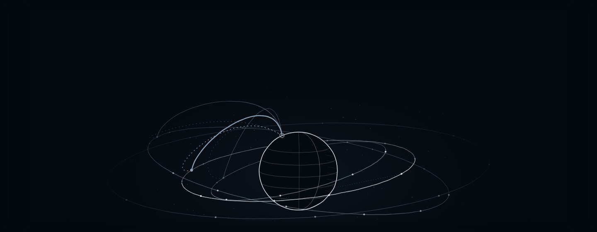
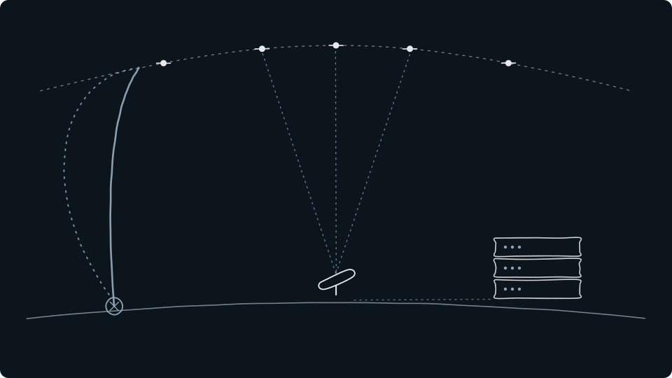
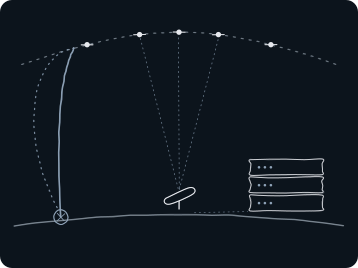

2,72 % af PMINDI2,92 % af PMINDIAKKSpaceX’ andel af fonden pr. 29.10.2026
SpaceX sender mennesker og satellitter i kredsløb og leverer internetforbindelser gennem Starlink. AI udgjorde godt halvdelen af selskabets omsætning i 3. kvartal 2026. Her kan du undersøge, hvordan teknologien virker, og hvad de forskellige forretninger bidrager med.

Illustration: NewDeal Invest.
14,58mia. USD i omsætning i 3. kvartal 2026
7,56mia. USD af omsætningen kom fra AI
2,79mia. USD i driftsresultat, sum af segmenter
Andele: afdelingerne PMINDI og PMINDIAKK pr. 29.10.2026 (fondens data). Regnskabstal: Q3-regnskabsmeddelelsen, offentliggjort 20.10.2026. Tekst redigeret 29.10.2026.
Markedsføringsmateriale, ikke personlig investeringsrådgivning. Indholdet tager ikke hensyn til din økonomi, erfaring eller risikovillighed. Risiko og investorinformation ↓
01 · Teknologien
Tre forretninger med forskellige opgaver.
Rumfart, Starlink og AI har hver sin teknik, sine kunder og sin økonomi.

Hjem igen (genbrug)Starlink (satellitterne)OpsendelseTerminalAI på jorden

Hjem igenStarlink (satellitterne)OpsendelseTerminalAI på jorden
Illustration: NewDeal Invest. Skematisk tegning, ikke i målestok.
Rumfart · opsendelser
Adgang til kredsløb
Raketten er transporten. Genbrug ændrer regnestykket.
En raket består af trin, der arbejder efter hinanden. Falcon 9 bringer det nederste trin med de store motorer tilbage til Jorden, så det kan flyve igen. Det sparer ikke al klargøring, og resten af raketten genbruges ikke på samme måde.
Sådan bliver det en forretning
Kunder betaler for at få satellitter, last eller mennesker ud i rummet. SpaceX bruger også opsendelserne internt til Starlink. En intern opsendelse er derfor ikke det samme som en ny ekstern kundeindtægt.
Det afhænger af: hvor ofte raketten kan flyve, og hvor sikkert og billigt den kan klargøres igen.
Starlink forbinder terminaler på Jorden med satellitter i lave kredsløb. Satellitterne flytter sig hele tiden, så forbindelsen skal overdrages fra én til den næste. Netværket består også af jordstationer, software og forbindelser mellem satellitter.
Sådan bliver det en forretning
Her er produktet internetadgang. Kunden betaler for udstyr og en tjeneste, der typisk betales løbende. Flere satellitter kan give mere kapacitet, men netværket skal også vedligeholdes og fornys.
Det afhænger af: kundeantal, indtægt pr. kunde og netværkets kapacitet.
SpaceX rapporterer nu også AI-modeller, software og beregningsinfrastruktur i segmentet Super Intelligence. Her er produktet beregning eller software, mens de fysiske forudsætninger blandt andet er chips, strøm og køling.
Sådan bliver det en forretning
Forretningen skal forstås særskilt fra opsendelser og internetabonnementer. Store aftaler kan øge omsætningen, samtidig med at udbygningen kræver store investeringer.
Det afhænger af: kapacitetsudnyttelse, kundeaftaler og udgifter til infrastrukturen.
Starlink giver SpaceX en anden indtægt fra rumfarten.
Når SpaceX sender en kundes satellit op, betaler kunden for transporten. Når raketten i stedet bærer Starlink-satellitter, bygger SpaceX sit eget netværk. Her kommer indtægten fra de kunder, som betaler for internetadgang.
SpaceX leverer altså både raketten og den tjeneste, satellitterne gør mulig. Men en opsendelse for Starlink er ikke en betaling fra en ny kunde uden for koncernen. Det er en del af arbejdet og udgiften ved at drive internetforretningen.
Falcon-raketten bringer Starlink-satellitter i kredsløb.
Starlink-netværket forbinder kundens terminal med internettet.
Kunden betaler for udstyr og internetadgang.
Sideboosterne vender hjem efter GOES-U-opsendelsen i juni 2024.Foto: SpaceX (CC0), via NOAA.
Det er også en hjemrejse
Raketten er ikke færdig, når den har sendt sin last afsted.
På billedet vender to rakettrin tilbage til Jorden. Motorerne bremser nedstigningen, og landingsbenene gør det muligt at sætte trinnene ned igen.
Det er forskellen mellem at bygge et nyt rakettrin til hver tur og at kunne bruge det samme flere gange. Men en vellykket landing er kun begyndelsen. Inspektion, klargøring og næste opsendelse er også en del af regnestykket.
Fra teknik til forretning
Genbrug kan fordele udgiften til et rakettrin over flere flyvninger. Hvor meget det betyder, afhænger også af vedligeholdelse, kapacitet og hvor ofte raketten kommer afsted.
Sammenlign de tre segmenter. En stor forretning målt på omsætning behøver ikke bidrage mest til driftsresultatet.
2. kvartal 2026 · april til juni. Alle tal i mio. USD.
Omsætning
7,81
mia. USD i alt
Rumfart962
Starlink4.291
AI2.561
Driftsresultat
−0,14
mia. USD, sum af segmenter
Rumfart−542
Starlink1.656
AI−1.257
Anlægsinvesteringer
18,37
mia. USD i alt
Rumfart1.174
Starlink1.367
AI15.828
Starlink havde både størst omsætning og størst driftsresultat. Anlægsinvesteringerne var 18,37 mia. USD.
3. kvartal 2026 · juli til september. Alle tal i mio. USD.
Omsætning
14,58
mia. USD i alt
Rumfart1.767
Starlink5.248
AI7.560
Driftsresultat
2,79
mia. USD, sum af segmenter
Rumfart−7
Starlink2.367
AI431
Anlægsinvesteringer
19,59
mia. USD i alt
Rumfart1.606
Starlink1.543
AI16.444
AI havde størst omsætning. Starlink bidrog mest til driftsresultatet. Anlægsinvesteringerne oversteg omsætningen, og 16,44 mia. USD gik til AI.
Hver graf bruger samme skala i begge kvartaler. Driftsresultat er resultat før renter og skat. Anlægsinvesteringer er udgifter til aktiver, der skal bruges over flere år. Periodens afskrivninger indgår i driftsresultatet, men hele investeringen trækkes ikke fra på én gang.
AI-væksten kom ifølge selskabet især fra nye cloudaftaler, overtagelsen af Cursor og øget brug af Grok. Cursor indgår fra 14.08.2026 og bidrog med 608 mio. USD i omsætning. Driftsresultatet inkluderer 1,2 mia. USD i aktiebaseret aflønning knyttet til overtagelsen. Kvartalerne har derfor forskellig koncernsammensætning.
Kilde: Q3-regnskabsmeddelelsen, 8-K bilag 99.1, offentliggjort 20.10.2026. Q2 er sammenligningstal fra samme meddelelse. Super Intelligence er selskabets regnskabsnavn for AI-segmentet. Åbn regnskabsmeddelelsen hos SEC ↗
03 · Historien
Fra et enkelt mål til flere forretninger.
Udvalgte milepæle. Historien viser, hvad selskabet har opnået. Den er ikke en tidsplan for det næste gennembrud.
En ny raketvirksomhed
SpaceX bliver grundlagt. Udgangspunktet er at udvikle og bygge egne raketter.
Starship leverer 26 af selskabets egne Starlink V3-satellitter. Selskabet omtaler missionen som indtægtsgivende. Det er ikke dokumentation for en ekstern kundeindtægt.
Første tilgængelige Fundmarket-rapport i hver måned. Sidste punkt, 29.10.2026, er fondens egne data, samme kilde som andelen øverst. Manglende observationer er udeladt og ikke sat til nul. Grafen viser andelen af fonden, ikke aktiens pris.Se observationer
Videoerne er selskabets eget materiale og vises ikke som en uafhængig vurdering. De åbner hos YouTube.
Udvalgte opslag fra X
Nyheder om teknologien og forretningen, udvalgt automatisk. Teksten på hvert kort er vores automatiske resumé. Opslaget fra X indlæses først, når du trykker på knappen.
SStarlink@Starlink · Selskabets konto ·
Hvorfor er det med?
Starlink oplyser, at tjenesten Starlink Mobile nu er i drift i Brasilien sammen med teleselskabet Vivo. Ifølge Starlink kan 50 mio. kunder bruge apps og beskeder i områder uden mobildækning, og 7 mio. telefoner er allerede forbundet.
Starlink oplyser, at selskabet skal levere internetforbindelse om bord på easyJets fly, så passagererne kan arbejde, streame og holde kontakten under flyvningen.
SpaceX oplyser, at selskabet har gennemført en statisk prøvetænding af alle 33 motorer i fuld varighed på den Super Heavy-booster, der forberedes til Starships 15. testflyvning.
Senest gennemgået 29.10.2026. Opslagene er afsendernes egne udsagn.
NewDeal Invests perspektiv
Nysgerrig på at læse mere om forbindelsen mellem opsendelser, kommunikation og beregningsinfrastruktur?
Analysen undersøger forbindelsen mellem opsendelser, kommunikation og beregningsinfrastruktur. Scenarier om datacentre i rummet skal holdes adskilt fra dokumenteret drift.
Et grundlag for at forstå. Ikke en personlig anbefaling.
Materialets formål
Udgivet af NewDeal Invest som markedsføringsmateriale. PMINDI og PMINDIAKK forvaltes af Fundmarket A/S. Siden forklarer selskabets teknologi og forretning og tager ikke stilling til, om en investering er egnet til dig. Den er ikke personlig investerings- eller skatterådgivning.
Hvis du overvejer fonden
Du kan miste en del af eller hele din investering. Teknologiaktier kan svinge betydeligt, og fonden er også udsat for sektorrisiko. Læs dokumentet med central information (PRIIP-KID), prospektet og risikobeskrivelsen inden en investeringsbeslutning.
Fondens andel vises med dato under Fonden. Selskabets egne videoer og opslag er afsenderens udsagn. Udvælgelsen gør dem ikke til uafhængige analyser. Kildeangivelse er heller ikke en garanti for, at udsagnene er korrekte.
Regnskabstal og fondsandele har hver deres opgørelsesdato. Forklaringer og spørgsmål på siden er redaktionelt indhold.
Beholdninger 29.10.2026. Tekst redigeret 29.10.2026.